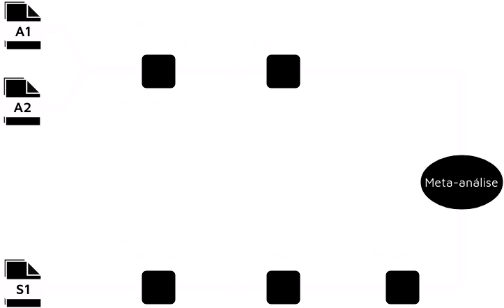
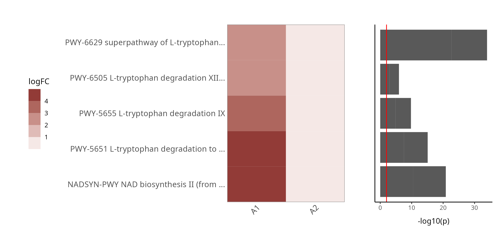

Seminários de Bioinformática 2024.1
Acesse essa apresentação
https://tinyurl.com/seminarios-joao

Quem é você?
O que eu fiz no meu mestrado até agora?
- TCC - desenvolvimento de ferramentas para metagenômica
- Que agora são:

- Sustentabilidade de software em metagenômica [2]
- Reprodutibilidade
- Gerenciadores de workflow
- O ecossistema computacional de Metatranscriptômica e integração de dados de microbioma


Alterações funcionais na microbiota no Transtorno Depressivo Maior
Você é 10% humano
Como a Microbiota influencia na saúde mental?

Como a Microbiota influencia na saúde mental?
Transtornos psiquiátricos têm sido considerados de origem no SNC, porém há uma quantidade montante de evidência apontando para a influência da microbiota intestinal [4]
Inflamação é geralmente considerada um dos mecanismos finais pelo qual estressores internos e externos levam a uma doença. Esse conceito tem sido extendido para transtornos neuropsiquiátricos, incluindo TDM [5] [6]

O que é metagenômica?
Consiste em sequenciar o conteúdo genético de uma amostra ambiental, seja este ambiente um tecido no hospedeiro, como a pele, seja uma amostra de solo, etc.
Possui duas príncipais estratégias, a que utiliza amplicom e a shotgun ou sequenciamento de metagenoma completo [8]
Tipicamente estuda-se dados metagenômicos a partir de um olhar composicional, com um foco na táxons microbianos presentes em uma amostra [9]
O que é uma variante genética?
Objetivo
- Determinar diferenças composicionais e funcionais na microbiota intestinal de indivíduos com TDM através de uma meta-análise
Metodologia - Metagenômica
Seleção dos datasets
| Abreviação | BioProject | CTRL | TDM | Citação |
|---|---|---|---|---|
| A1 | PRJNA846994 | 48 | 92 | [12] |
| A2 | PRJNA776170 | 44 | 41 | [13] |
| S1 | PRJNA762199 | 38 | 36 | [14] |
- Em todos os casos:
- Os indivíduos não estavam utilizando antidepressivos
- Foram diagnosticados através do DSM-IV ou DSM-V
Metodologia

- Meta-análise da A.D. através do método de Fisher, como implementado no pacote R metap (padj < 0.05).
Metodologia - Randomização Mendeliana
Seleção dos datasets
| Citação | N | Notas |
|---|---|---|
| [20] | 7.738 | SNPs associados com a abundância de 205 vias metabólicas na microbiota. |
| [21] | 16.823 (TDM) | SNPs associados com o Transtorno Depressivo Maior |
- Para [21], foi considerado apenas indivíduos diagnosticados com TDM através do DSM-IV, ICD-9 ou ICD-10.
- O estudo contou com 25.632 indivíduos controle.
- Ambos estudos utilizaram apenas indivíduos de origem europeia.
Metodologia

Resultados
beta-Diversidade
- beta-Diversidade mostra a dissimilaridade composicional entre ambientes
- Há uma diferença significativa entre Controle e TDM nos três datasets (PERMANOVA p<0.05).
Abundância Diferencial
Vias do Triptofano

- Apesar do aumento na biossíntese de TRP, há um aumento em igual proporção em diversas vias de degradação de TRP também.
Vias do Triptofano
As duas principais fontes de Trp no organismo são via alimentação e via síntese microbiana.
Queda do TRP plasmático é um dos biomarcadores séricos de TDM mais bem replicados na literatura [23] [24] e já foi implicado na promoção de TDM, associado à atividade inflamatória [25].
95% do TRP intestinal é convertido em Kyn, que modula a neuroplasticidade e/ou exerce neurotoxicidade, através de sua interação com receptores NMDA, afetando a neurotransmissão glutamatérgica [26] [4]. A síntese de Kyn é favorecida em quadros de baixa disponibilidade de Trp [27].
Os 5% restantes é convertido é serotonina intestinal, que exerce efeito local na neurotransmissão.
Vias da Histidina
- Apesar da queda em HISDEG-PWY. há um aumento em PWY-5028, mostrando uma possível via alternativa de degradação.
Vias da Histidina
Como o Trp, a His é um aminoácido essencial, cujas principais fontes são alimentação e biossíntese microbiana.
Níveis séricos diminuídos de L-histidina já foram propostos como marcadores metabolômicos de treatment-resistant depression [23] [29]
O mecanismo pelo qual isso acontece ou como a histidina pode estar atuando na TDM ainda não foram compreendidos, mas HCDs como carnosina e balenina podem atuar fisiologicamente como antioxidantes endógenos, neuroprotetores e neuromoduladores [30] [31]
Vias da degradação de Lactose
Em casos de alta disponibilidade de lactose no intestino (por mal-absorção do organismo), o metabolismo bacteriano de lactose e galactose aumenta, o que, além do descomforto abdominal, traz consequências metabólicas.
Lactose forma complexos com triptofano, o que pode levar a um shift do triptofano disponível para a produção de Kyn. Algo que já foi proposto como explicação para associações encontradas entre mal-absorção de lactose e depressão em mulheres [32].
Mutações da lactase já foram associadas com pacientes com TDM [33], o que pode implicar em mal-absorção.
A menor disponibilidade de triptofano pode impactar na neurotransmissão serotoninérgica local.
Randomização Mendeliana
De 205 vias, 16 (acima) indicam um possível efeito causal no TDM.
Vias da histidina e da degradação de lactose/galactose apontam resultados concordantes com a abundância diferencial.
Conclusões
- Há diferenças metabólicas evidentes na microbiota de indivíduos com TDM
- Claro desbalanço na disponibilidade de aminoácidos essenciais, sobretudo Triptofano e Histidina.
- Possível influência do catabolismo de Lactose e Galactose.
- Algumas dessas vias indicam influência causal na manifestação do TDM.
- No entanto há uma série de limitações:
- Estudos de metagenômica são apenas uma inferência indireta da atividade metabólica, sobretudo os de 16S.
- Um estudo de metatranscriptômica ou metabolômica podem apontar resultados mais concretos e ser uma possível validação da análise.
Agradecimentos


Referências
Seminários de Bioinformática 2024.1
João Vitor Cavalcante